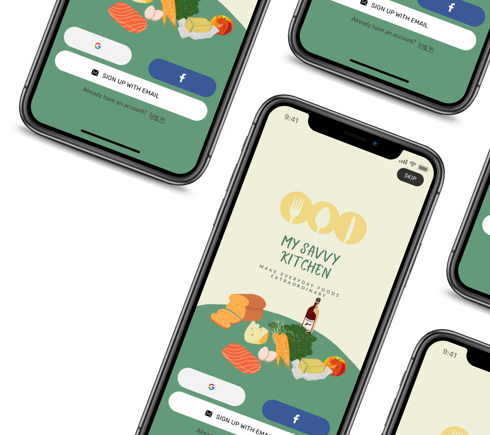
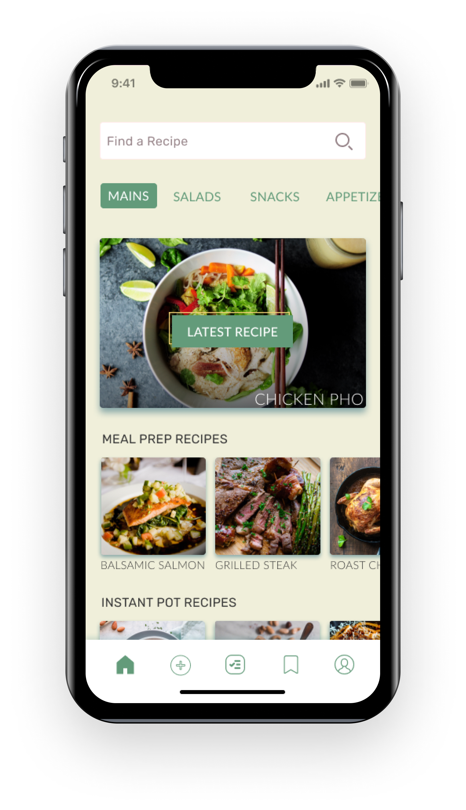
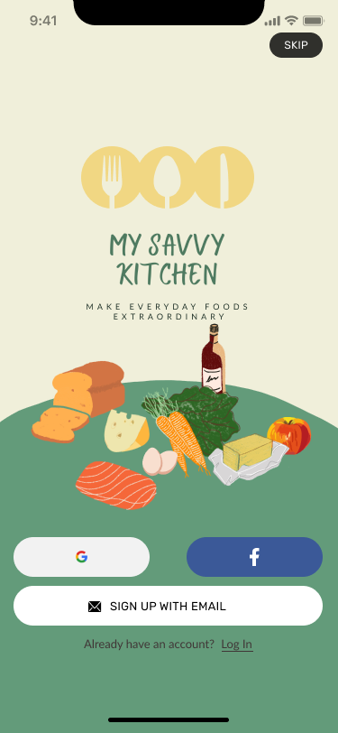
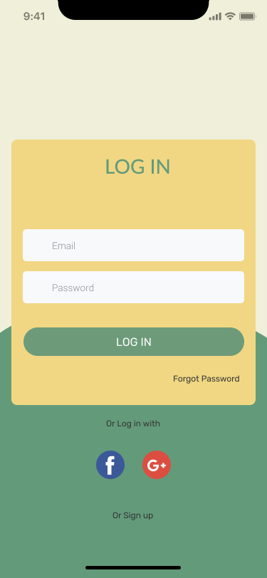
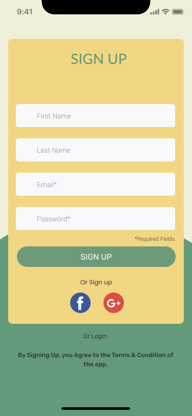
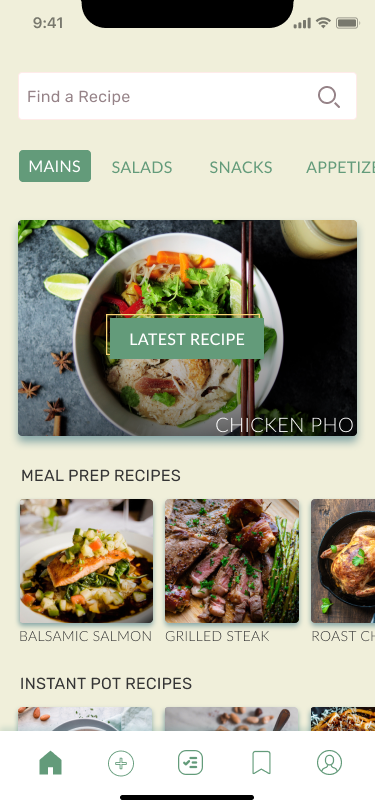
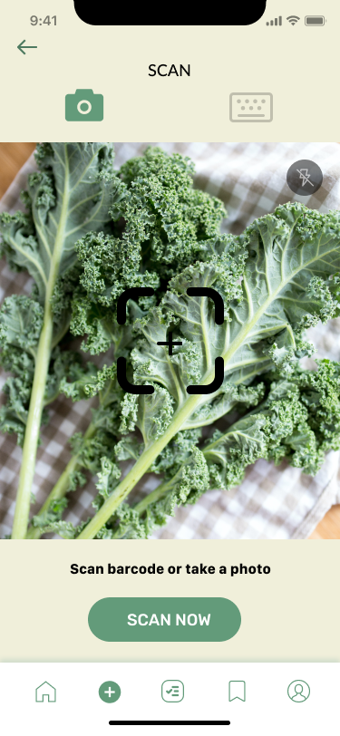
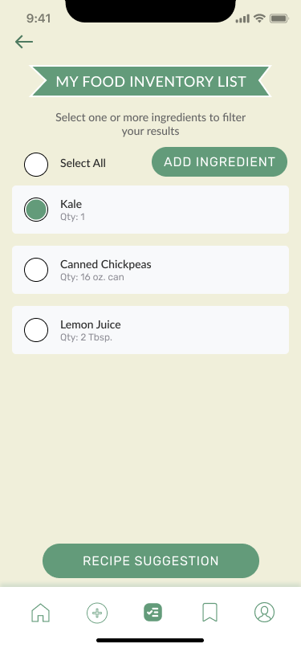
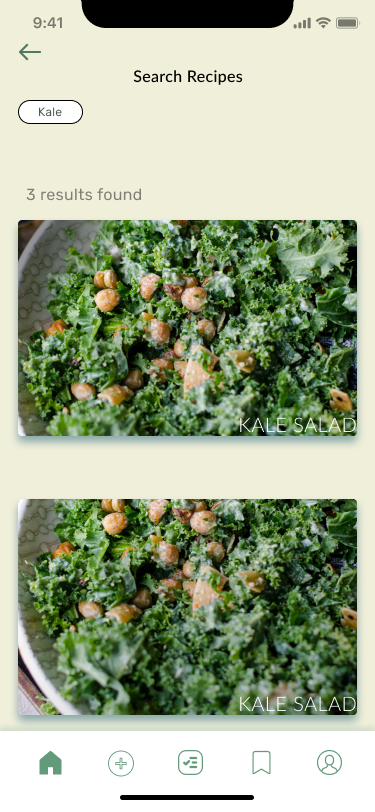
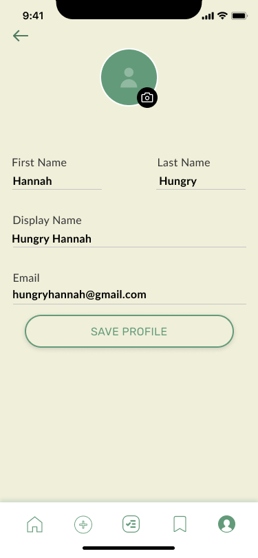

A food inventory management app that provides users with seamless grocery items entry and recommends meals based on ingredients in their kitchen.


UX/UI Designer
Somreen Safdar
Jordyn Doyle
3 Weeks
Figma
Adobe Photoshop
Adobe Illustrator
Consumers need a quick and easy way to manage and track their food.
A 2020 report by Dalhousie University’s Agri-Food Analytics Lab and Ontario-based research firm Caddle focusing on food waste in the home during COVID-19 suggests that Canadian households are:
It’s not surprising that more food is being wasted since people are at home more and cooking their own meals. But how much of that food that they’re buying are they using, and how much is being thrown away compared to before the pandemic? We aimed to tackle this problem, and during the research process, we found that 80% of our users had trouble keeping track of their food and planning meals, which led to food waste.
To gain a better understanding of the users, we surveyed 37 people about their pantry and cooking habits. And following the survey, we interviewed 5 people and asked questions like:
We obtained the following key insights:
We interviewed 5 people between ages of 25-34 years old, who were the primary cooks in their households. The insights we found were that while people were buying more food overall, 78% of users are throwing away or forgetting about what food they have in their fridge or pantry. In addition, 94% of users are motivated to reduce their household’s avoidable food waste.
We utilized affinity mapping to identify further insights from our user interviews.
We found that users mostly had issues with storage and coming up with creative, and easy, meal ideas they could make with ingredients they already have.
We also created a user flow to show what we visualized the most efficient, and effective, path a user could take to successfully add items to their inventory list. We used this as a guide to help us design a more simplified and streamlined management process.
Since this design involved an entirely new system, we conducted usability tests on users who fit our core demographic (i.e. young professionals, reside in urban areas and 25-34 years old).
We wanted to learn what aspects of a food inventory management app were the most important to them.
The tasks we used during these tests had the users:
Our usability testing showed that the biggest pain point with the app were the labels and titles of the inventory screen and the camera screen.
Additional Insights:
These insights gave us a good understanding of what worked and what didn’t work for our users so more iterations were made on the screens and the user flow.
We decided that the biggest value to the My Savvy Kitchen app was adding new entries to the inventory list, which meant that we needed to make changes to the labels, and how screens were titled, so that users could readily understand what the titles meant. The major iteration made was adding a plus icon to the bottom navigation bar so that users could add entries at any point. We also added titles to the camera scan screen and inventory list.
And here are the final high-fidelity wireframes…








If the project were to continue:
{kind=link}
{kind=link}
{kind=link}
{kind=link}